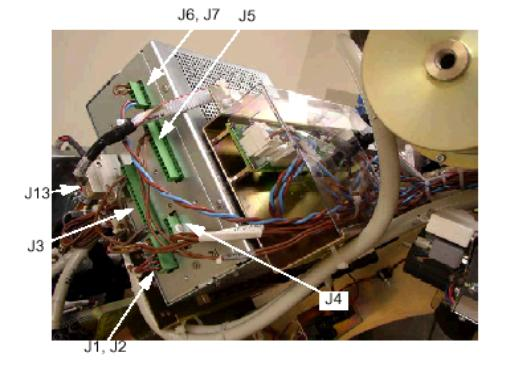
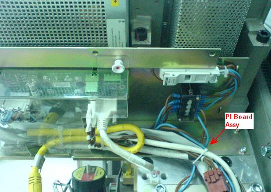
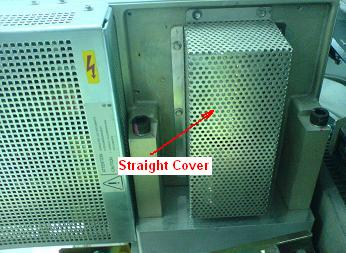
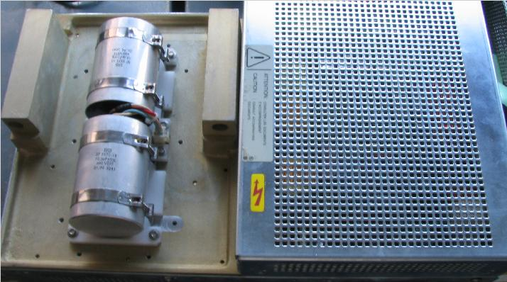

Disconnect all the cables showed in below picture:
Illustration 1: Auxiliary Box Cable Connection

Remove four screws and put the PI board assembly at proper position.
Illustration 2: Remove screws

Remove ten (10) screws to remove the straight cover. Then the capacitors will appear.
Illustration 3: Remove the straight cover

Illustration 4: capacitors
